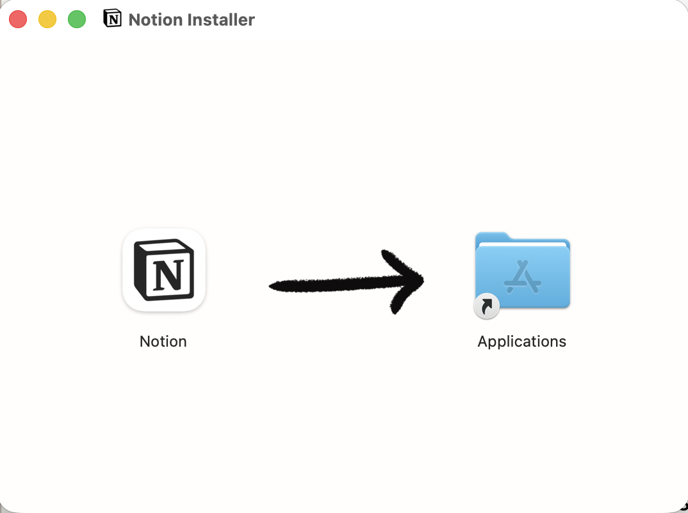
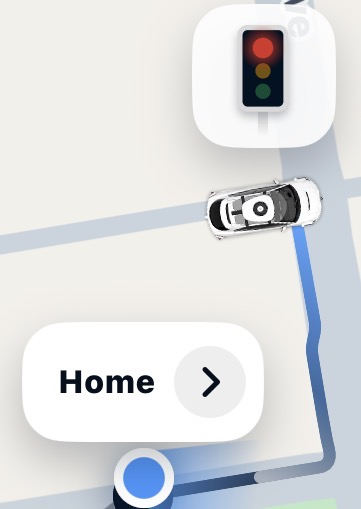

01payment, made physicalA tiny 3D card slips into a reader beside a vase, then swoops back out once approved—turning a generic payment wait into a physical moment.Airbnb02linked, visiblyThe animation explains the system without a word: messages, reactions, emoji and voice notes travel from your phone to your laptop.WhatsApp03snow in the previewEven the property preview is alive. Open the house and snow falls gently across the scene outside.Wander04waiting, animatedCartons, groceries and a whisk animate while the order is prepared, making the waiting state feel active rather than empty.Uber Eats05a clock that catches the lightAs the phone moves, the clock’s Liquid Glass highlights and shadows shift with it, making the lock screen feel physically lit.iOS06an offer with an entranceA discount could have been a plain banner. The animated luggage tag gives the offer a satisfying little entrance.Airbnb07three little twirlsOn launch, beautifully modeled 3D icons for Homes, Experiences and Services greet you with a small twirl.Airbnb08a tiny arrivalA small animated opening gives even a brief loading state a sense of arrival.Rappi

09even the installerA hand-drawn arrow turns the most generic Mac installer instruction into something unmistakably Notion.Notion

10the car is the markerThe map uses the actual car as its icon, making your position feel more concrete than a generic location marker.Waymo